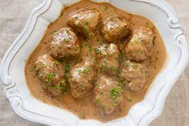

Meatball Sauce Recipes

Description
Ingredients
- Dash of oil
- 40g butter
- 40g plain flour
- 150mL vegetable stock
- 150mL beef stock
- 150mL thick double cream
- 2 teaspoons soy sauce
- 1 teaspoon Dijon mustard
Steps
- Melt 40g butter in a pan
- Whisk in 40g of plain flour and stir for two mins
- Add 150ml of veg stock and 150mL of beef stock and continue to stir
- Add 150ml of double cream, 2 tsp of soy sauce, and 1 tsp of Dijon mustard
- Bring it to simmer and allow sauce to thicken